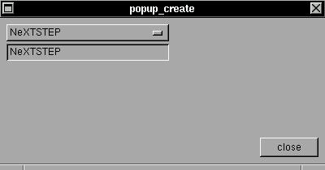

This widget is a combination of two widgets: a button with the selected option and a popup menu. The menu is actived only if the user press the mouse button over the button. Then, a popup menu will be opened until the user release the mouse button. The position of mouse will be used to determine the selected option and the label of the selected option will be moved to the buffer.SYNTAX
struct xtree *menu_create(x,y,w,h,list,treeptr,f);EXAMPLE
void popup_create(x,y,w,h,buffer,list,h2);int x,y,w,h,h2;
char *buffer,*list[];
struct xtree *treeptr;
void (*f)(struct xtree *);
Create a popup menu in position (x,y), size (w,h) and a list of buttons labeled by 'list' ('list' is a array of strings). You can select the menu or popup:The menu_create is now used only with mscroll, but can really be used with any other widget.
- with 'menu_create' you can callback a function f().
- with 'popup_create' you can write a buffer.
The selected option of the popup will be showed in the label (all operations are automatic :)#include <xstep.h> char buffer[64]="Solaris"; void xmain(int n,char *p[]) { char static *list[10]={ "Linux", "FreeBSD", "NetBSD", "OpenBSD", "NeXTSTEP", "UnixWare", "Solaris", "SunOS", "Irix", "Minix", }; window_create(0,0,400,180,"popup_create"); popup_create(8,8,200,21,buffer,list,10*21); label_create(8,8+24,200,21,buffer,gray,left); button_create(-8,-8,72,24,"close",window_close); }An example of menu_create exist in the example of mscroll widget.